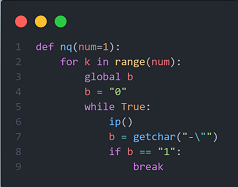

Documentation
Setup
Windows & Linux Setup
If you are a Windows user, install MSYS2.
Install Dependencies (list below)
Clone the repo:
cd ScratchLang/mainscripts
Start the project with
./start.sh
If you have a ScratchLang command, start the project with
If you want to test out the decompiler, run start.sh -4 and select the
.sb3 decompiler-all-added-blocks.sb3 which is in the resources folder.
You get to see it decompile all the blocks added so far.
To code, edit the .ss(es) in you
favorite glorified text editor like VSC or Atom.
To add assets, put them in the assets folder for the chosen sprite (or stage)
You don't need
ScratchLang to program ScratchScript (.ss) files, you can use a text editor. You just need
ScratchLang to compile your project so it can run in Scratch.
How to Add More Blocks
Adding more blocks to ScratchLang is a simple process.
But first, you must know how the program reads the .json.
There are some common functions that the script uses.
getchar()
The getchar() function gets char i of the project.json file, inside the variable char.
Lets say the first 3 characters of the json are "abc". If i is 0 and you run getchar(), then the value of the variable char will be a. If i is 1, then char is b. And so on.
Another important thing that this function does is tell you if the char i of the json is a certain one. Lets say the json is "abc" again.
b = 0
b = getchar("-a")
Since char 0 of the json is a and getchar is looking for a (parameter is -a), then it sets b to 0.
b = 0
b = getchar("-a")
Since char 1 of the json is b but getchar is looking for a, then b stays at the value it was before which is 0.
nq(num)
The nq(num) function goes to the next double quote character in the project.json. By default it does this once, but you can set the parameter "num" to a number to do it multiple times
The project.json is "abc".
nq()
i starts at 0, but when it goes to the next quotation mark in the json, i is set to 4.